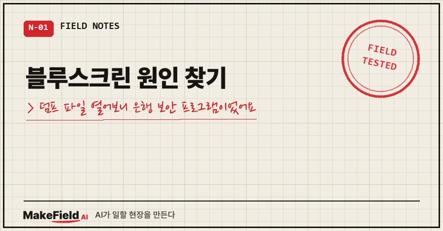
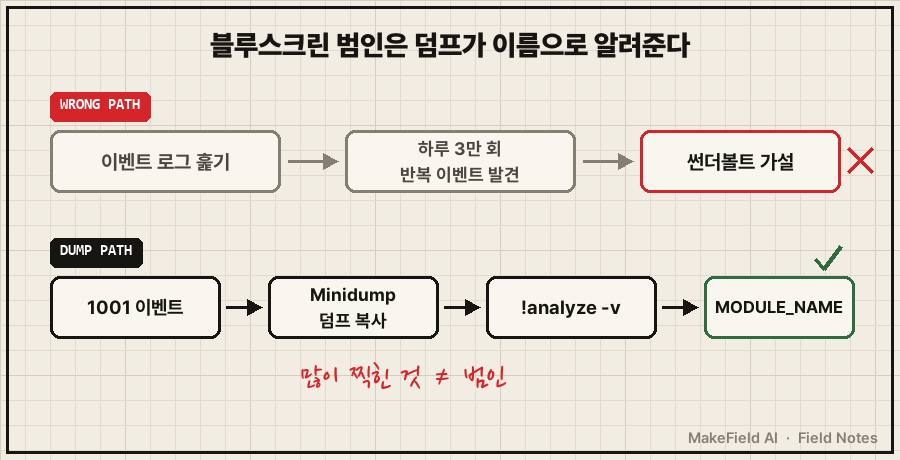
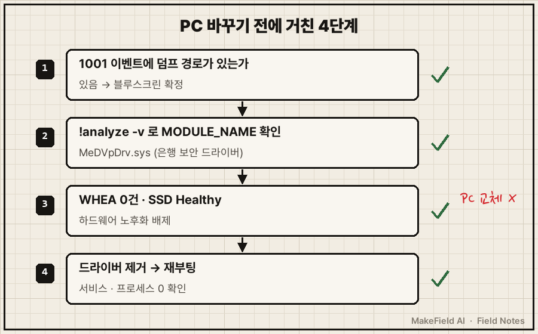
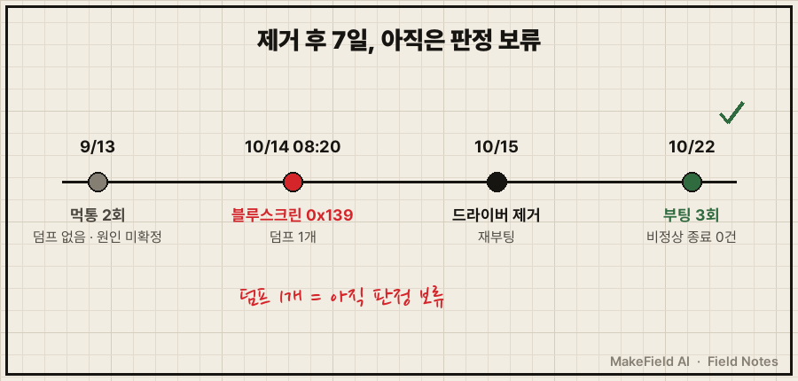

블루스크린 원인 찾기, 저는 "PC를 바꿔야 하나"부터 생각했어요.
"노트북이 종종 혼자 재부팅되네. 스케줄러 탓이야, 노후화야? 안 되면 그냥 PC 바꿀까."
지난주에 제가 AI한테 던진 말이에요. 반쯤은 진심이었습니다. 2021년식 노트북이었거든요.
결론부터 말하면, 노트북은 멀쩡했고 범인은 은행 사이트 들어갈 때 깔리는 보안 프로그램의 드라이버였어요. 그걸 알아내는 데 PC 교체 비용은커녕 무료 도구 하나랑 명령 한 줄이면 충분했습니다.
블루스크린 원인 찾기의 핵심 한 줄. 윈도우가 블루스크린으로 재부팅되면 C:\Windows\Minidump 폴더에 덤프 파일이 남고, 무료 디버거 WinDbg에서 !analyze -v를 돌리면 문제를 일으킨 드라이버 이름(MODULE_NAME)이 찍혀 나와요(2026년 10월, Windows 10 기준).
설비가 멈추면 알람 이력부터 여는 게 몸에 밴 15년차 제어 엔지니어인데요. 정작 제 노트북한테는 "늙었나 보다"부터 의심하고 있었네요..
1. 컴퓨터가 혼자 재부팅될 때, 덤프 파일이 있는지부터 보세요
시작은 블루스크린이 아니었어요.
아침에 돌아야 할 예약 작업 두 개가 안 돌아서 이유를 쫓다가, 그 시각에 PC가 한 번 죽었다는 걸 알게 됐습니다.
08:20에 블루스크린이 났고, 제가 다시 로그인한 게 17:18이었어요. 로그인해야 도는 작업들이라 그 사이 일정이 통째로 날아간 거죠.
이벤트 뷰어 시스템 로그에 이렇게 남아 있었어요.
이벤트 ID 1001 (WER-SystemErrorReporting)
The computer has rebooted from a bugcheck.
The bugcheck was: 0x00000139 (0x0000000000000003, ...)
A dump was saved in: C:\WINDOWS\Minidump\101426-21359-01.dmp여기서 중요한 건 마지막 줄이에요. 덤프가 저장됐다는 거요.
예전에 같은 노트북이 먹통이 됐을 땐 덤프가 하나도 없었어요. 그땐 "커널이 죽은 게 아니다"가 단서였고요. 이번엔 반대로 덤프가 있으니, 추측할 필요 없이 열어보면 되는 상황이었습니다.
2. AI의 첫 추정은 썬더볼트였어요
근데 덤프를 열기 전에 저희(저랑 AI)는 한 번 헛다리를 짚었어요.
AI가 이벤트 로그를 훑더니 썬더볼트 포트의 절전 전환 이벤트가 10월 8일부터 14일까지 하루 3만 회씩 반복되고 있다는 걸 찾아냈거든요. 숫자가 워낙 커서 그럴듯했어요. "이게 원인일 가능성이 높다"는 쪽으로 이야기가 흘러갔고요.
덤프를 열고 나서 이 가설은 바로 내려놨습니다. 덤프에 찍힌 이름이 전혀 다른 드라이버였으니까요.
로그에서 제일 많이 찍힌 것이 범인이라는 보장은 없더라고요. 시끄러운 이벤트는 눈에 잘 띌 뿐이고, 블루스크린의 범인은 덤프가 이름으로 알려줍니다.

3. 블루스크린 덤프 분석, 이 순서로 했어요
절차는 생각보다 짧았어요.
- 이벤트 뷰어 → Windows 로그 → 시스템에서 ID 1001을 찾아 덤프 경로 확인
- Minidump 폴더는 관리자 권한이 필요해서, 관리자 PowerShell로 덤프를 작업 폴더에 복사부터 (원본은 건드리지 않기)
- WinDbg 설치:
winget install Microsoft.WinDbg - 덤프를 열고
!analyze -v실행 (저는 명령줄 버전인 cdb로 돌려 결과를 텍스트 파일로 저장했어요)
cdb -z 101426-21359-01.dmp -c "!analyze -v; q" > analyze.txt결과는 900줄 가까이 나오는데, 실제로 읽은 건 이 정도예요.
KERNEL_SECURITY_CHECK_FAILURE (139)
Arg1: 0000000000000003, A LIST_ENTRY has been corrupted (i.e. double remove).
PROCESS_NAME: date.exe
MODULE_NAME: MeDVpDrv
IMAGE_NAME: MeDVpDrv.sys
FAILURE_BUCKET_ID: 0x139_3_CORRUPT_LIST_ENTRY_MeDVpDrv!unknown_function| 줄 | 뜻 | 제 경우 |
|---|---|---|
| 첫 줄 (139) | 커널이 핵심 자료구조 손상을 감지함 | 0x139 |
| Arg1 | 손상 종류 (3 = 연결 목록 손상) | 3 |
| PROCESS_NAME | 죽는 순간 돌던 프로세스 | date.exe |
| MODULE_NAME / IMAGE_NAME | 문제 지점의 드라이버 | MeDVpDrv.sys |
MeDVpDrv.sys를 추적해 보니 5월 18일에 은행 사이트 접속하면서 깔린 보안 프로그램의 행위 감시 드라이버(버전 2.28.1.5)였어요.
재밌는 건 PROCESS_NAME이에요. date.exe는 Git Bash에 딸린 날짜 출력 프로그램이에요. 제 PC에선 이런 셸 스크립트가 예약 작업으로 여러 개 돌고 있고요. 보안 드라이버는 새 프로세스가 뜰 때마다 감시하니까, 짧은 프로세스를 많이 띄우는 PC일수록 그 감시 경로를 자주 밟는다고 봤어요. 이건 덤프 하나로 단정할 수 없는 추정이고요.
4. 노후화가 아니라는 근거, 그리고 고른 방법
"오래됐으니 바꿀 때"라는 가설도 숫자로 확인했어요.
- 하드웨어 오류 이벤트(WHEA): 0건
- SSD 상태: Healthy
- 덤프가 가리킨 곳: 하드웨어가 아니라 서드파티 드라이버
선택지는 이렇게 놓고 봤습니다.
| 방법 | 장점 | 안 고른 이유 |
|---|---|---|
| PC 교체 | 깔끔해 보임 | 새 PC에도 같은 프로그램을 깔면 그대로 따라옴 |
| 예약 작업 줄이기 | 감시 경로를 덜 밟음 | 원인은 그대로, 내 일만 줄어듦 |
| 업데이트 기다리기 | 손 안 댐 | 언제 나올지 모름 |
| 보안 프로그램 제거 | 원인 드라이버가 사라짐 | 은행 접속 때 다시 깔아야 함 |
예전에 이 보안 프로그램이 hosts 파일 팝업을 띄웠을 땐 일부러 안 지웠어요. 그땐 원인이 다른 쪽에 있어서 그쪽을 고치는 게 맞았거든요. 이번엔 덤프가 드라이버 자체를 가리켰으니 판단이 달랐습니다.
마이크로소프트 공식 문서도 0x139에 대해 "최근 추가한 드라이버나 서비스가 있으면 제거하거나 업데이트해 보라"고 안내해요. 그래서 관리자 승인으로 제거하고 이렇게 확인했어요.
- 프로그램 제거 목록에서 사라짐
- 드라이버 서비스 2종 없음
- 관련 프로세스 없음
- 메모리에 올라가 있던 드라이버는 재부팅해야 완전히 내려감
은행 사이트가 다시 설치하라고 하면 그때 깔아 쓰고 다시 지우기로 정했습니다.

5. 덤프 파일을 그대로 보내면 안 되는 이유
원인을 찾고 나서 제조사 고객센터에 문의를 넣었어요. 덤프 분석 결과, 재현 조건(짧은 프로세스를 수천 번 연속 생성), 그리고 질문 네 개를 적었습니다. 알려진 결함인지, 수정 버전이 언제 나오는지, 회피책이 있는지, 비슷한 사례가 있는지요.
그런데 덤프 파일은 첨부하지 않았어요. 열어보니 제 윈도우 사용자명이랑 휴대폰 핫스팟 이름 같은 개인 식별 정보가 들어 있었거든요. 미니덤프라도 5MB 안에 그런 게 섞여 있습니다. 요청이 오면 보안 경로로만 보내기로 했어요. (문의 답변은 이 글을 쓰는 시점까지 아직 못 받았습니다.)
제거하고 오늘까지 7일, 재부팅은 3번 있었고 비정상 종료 기록(이벤트 41·6008·1001)은 0건이에요.

다만 이걸로 "해결"이라고 못 박진 않을게요. 공식 문서에 따르면 이 유형은 손상이 생긴 순간에 바로 잡히지 않을 수 있고, 덤프 여러 개를 비교해 보라고 되어 있어요. 저는 덤프가 한 개뿐이에요. 9월에 있었던 먹통 두 번은 덤프가 없어서 원인을 끝내 확정하지 못했고요.
이것도 많이들 물어보세요
Q. Minidump 폴더가 비어 있으면요?
덤프가 안 남은 재부팅이면 블루스크린이 아닐 가능성부터 봐야 해요. 전원이 끊긴 건지, 업데이트 재시작인지, 절전에서 못 깨어난 건지요. 이벤트 41만 있고 1001이 없으면 저는 그쪽부터 의심합니다.
Q. 보안 프로그램을 지워도 괜찮나요?
은행 사이트는 필요할 때 다시 설치를 요구하니까 그때 깔면 돼요. 저는 "상시 설치"를 "필요할 때만 설치"로 바꾼 셈입니다. 다만 백신까지 지우라는 얘기는 아니에요. 이번에 지운 건 은행 접속용 보조 프로그램 하나예요.
PC 바꿀 뻔했던 일이 명령 한 줄로 정리됐어요. 블루스크린 원인 찾기에서 "늙어서 그래"는 덤프를 열어본 다음에 해도 늦지 않더라고요. 여러분 PC의 Minidump 폴더에는 지금 몇 개가 쌓여 있나요?
PC가 이상할 때 AI랑 원인을 좁혀간 다른 기록들도 makefield.ai에 차곡차곡 모아두고 있습니다.
출처
- Microsoft Learn, Bug Check 0x139 KERNEL_SECURITY_CHECK_FAILURE (2026-10-22 원문 확인) → https://learn.microsoft.com/en-us/windows-hardware/drivers/debugger/bug-check-0x139--kernel-security-check-failure
- 사례: 2026-10-14 개인 노트북 블루스크린 덤프 분석·조치 기록, 2026-10-22 이벤트 로그 재확인
태그: #블루스크린원인찾기 #블루스크린덤프분석 #컴퓨터혼자재부팅 #KERNEL_SECURITY_CHECK_FAILURE #블루스크린0x139 #WinDbg사용법 #미니덤프 #이벤트뷰어1001 #은행보안프로그램 #드라이버충돌 #윈도우10블루스크린 #PC노후화확인 #AI로PC진단 #막힐때해결 #MakeFieldAI